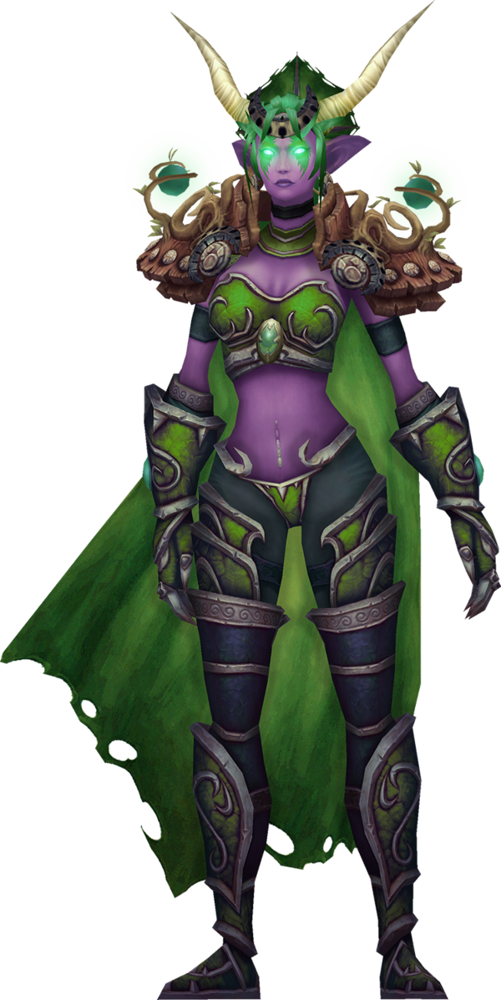

Druidas
En los druidas tenemos a Cenarius maestro de Ilidan y de su hermano Malfurion Stormrage el archidruida dos polos opuestos y finalmente tenemos a Ysera protectora de la naturaleza.



Historia de como un MMO influyo en la creación del nickname de Nocturnux.
Con dos grandes influencias que son un hombre lobo druida llamado Nocturnux y una elfa de la noche cazadora de demonios llamada Kadmil.
Primero hablare de los cazadores de demonio liderados por Ilidan Stormrage un exdiscípulo de druida que dedico su vida a destruir demonios.

En los druidas tenemos a Cenarius maestro de Ilidan y de su hermano Malfurion Stormrage el archidruida dos polos opuestos y finalmente tenemos a Ysera protectora de la naturaleza.
Copyright © 2023 Designed by Nocturnux All rights reserved.